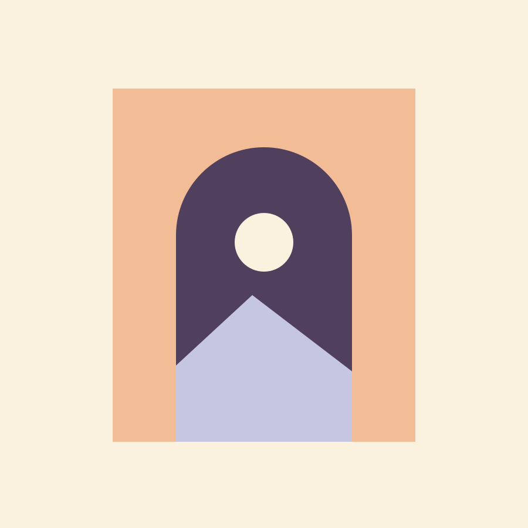
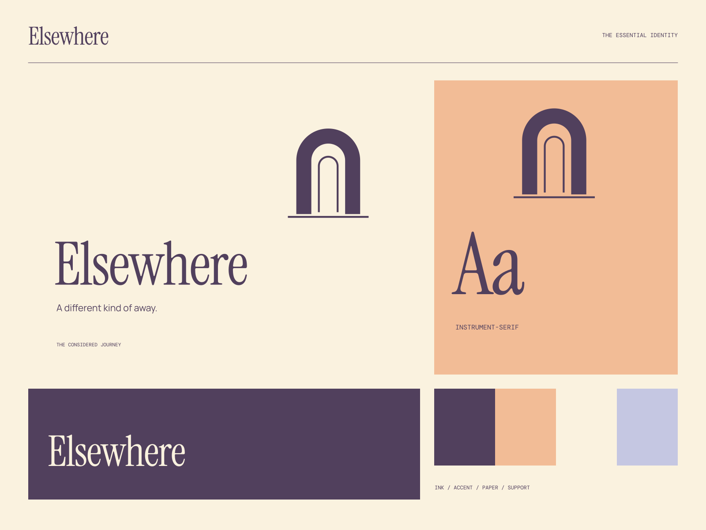

01
The scenic approach
A journey shaped by curiosity rather than a checklist.
JOURNEYS WITH A POINT OF VIEW
A different kind of away. Go slowly. Look a little closer.

A coherent little world
Go slowly. Look a little closer. A different kind of away.
01
A journey shaped by curiosity rather than a checklist.
02
Thoughtful notes on what makes somewhere feel different.
03
More room for the moments between the destinations.

The point of view
Surreal doorways into layered landscapes, postcard framing, beautifully oversized reading serifs, and destination-like color blocks. Travel as a point of view.